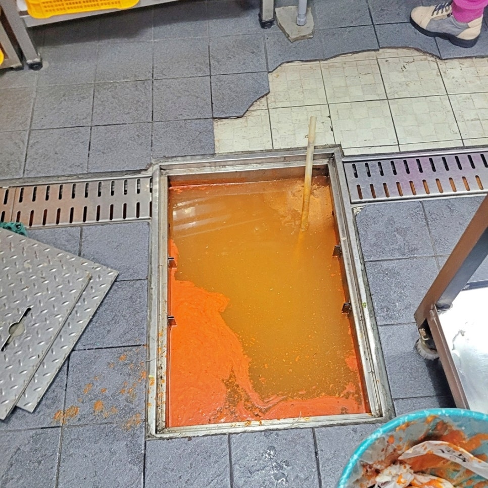
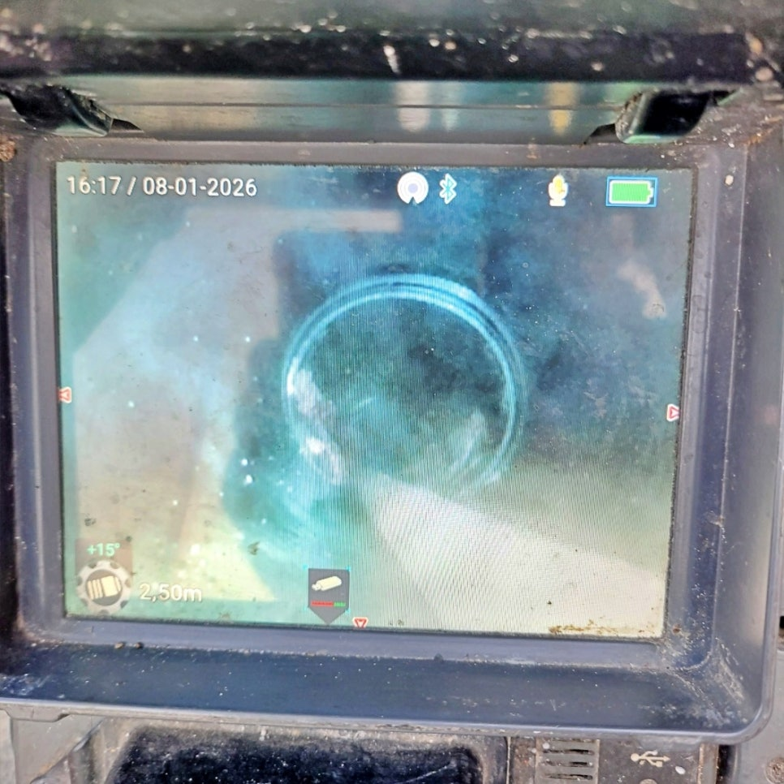
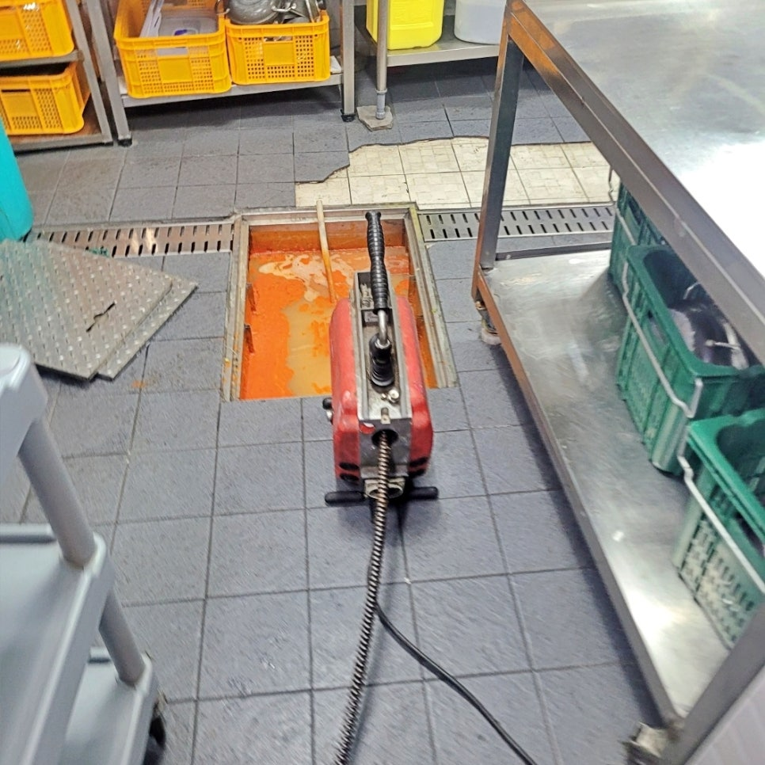
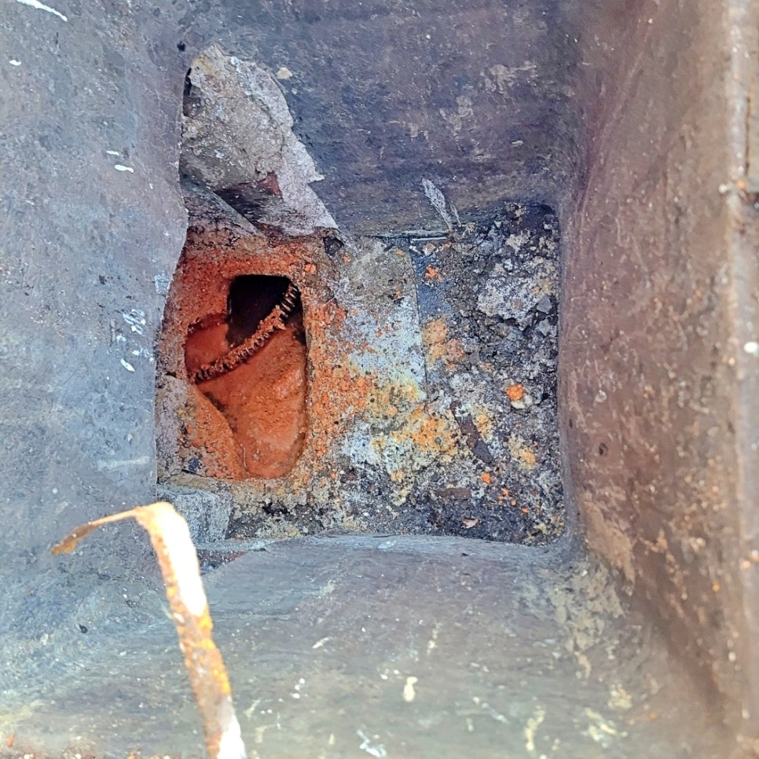
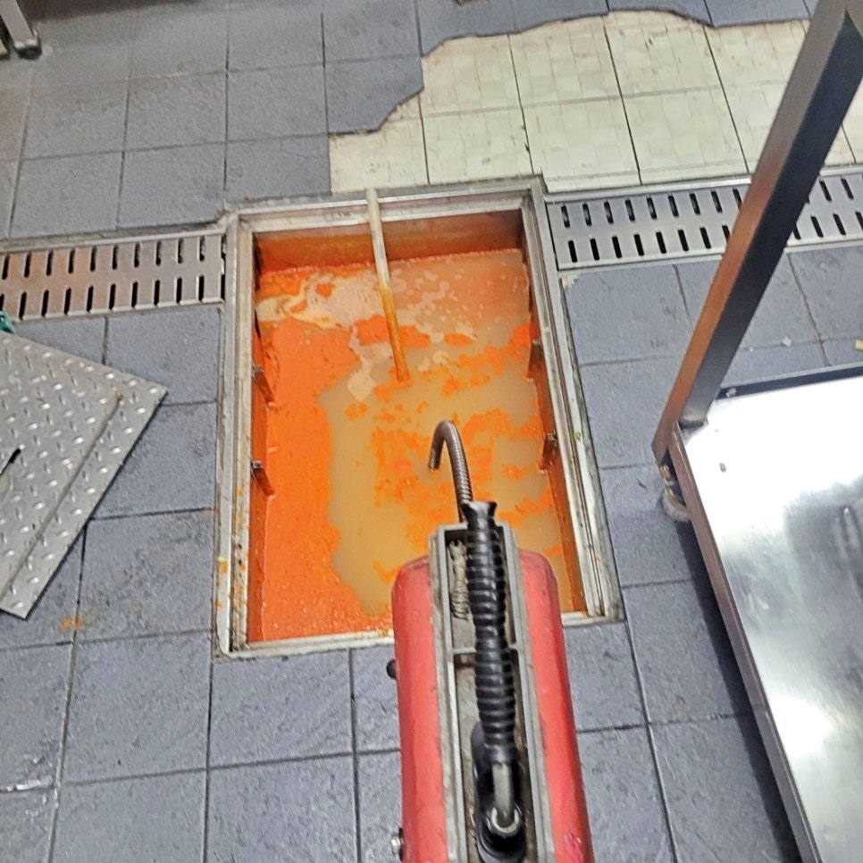
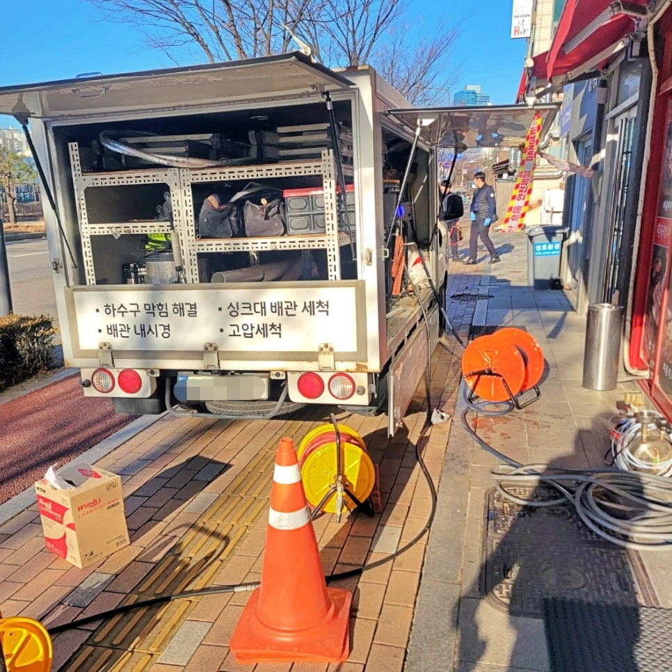

🏠 매탄동 식당 하수구막힘 역류 원인 고압세척 청소로 해결함
수원 매탄동 하수구막힘 전문 시공 후기

📋 작업 개요
- 위치: 수원 매탄동, 매탄동, 수원
- 서비스 유형: 하수구막힘, 배관막힘, 맨홀막힘, 역류해결, 뚫는업체, 배관청소, 고압세척
- 작업 일시: 2026. 1. 16. 20:19
- 업체명: 하수구수사대 (010-5615-2118)
🔍 문제 상황
영통구 매탄동 식당 하수구막힘 역류
원인 고압세척 청소 시공으로 해결함
안녕하세요?
수원 영통구 매탄동 하수구막힘 역류
고압세척 청소전문 하수구수사대
인사드립니다.
오늘은 매탄동에 위치한 한 식당에서
발생한 주방 하수구막힘 역류 문제를
고압세척 청소로 해결한 실제 사례를
준비했습니다.
매탄동 식당 하수구막힘으로 역류한 현장
식당에서 하수구막힘 문제는 바로 영업
중단으로 이어질 수 있어 신속한 대응이
무엇보다 중요한데요.
현장에 도착해 보니 주방 트렌치
하수구가 완전히 막혀 물이 전혀
내려가지 않고 바닥으로 역류하는
긴급한 상황이었습니다.
과연 이번에는 이 긴급한 문제를
어떻게 해결해 드렸는지 자세히
소개하겠습니다.
오늘의 시공 후기 Index
1. 매탄동 식당 하수구막힘 원인은 기름
덩어리
2. 고압세척 청소로 근본적 문제 해결
3. 오늘의 시공후기를 마치며
1. 매탄동 식당 하수구막힘 역류 원인은 기름 덩어리

🔎 원인 분석
💡 전문가 진단: 영통구 매탄동 식당 하수구막힘 역류원인 고압세척 청소 시공으로 해결함
내시경 카메라로 내부를 점검한 결과
외부 오수 맨홀까지 기름으로 꽉 막힌
상태임을 알 수 있었는데요.
점주님께서는 그동안 트렌치 하수구에
엑셀 파이프를 넣어 외부 맨홀까지
연결했다가 막힐 때마다 쑤시는 임시
조치를 해오셨다고 하셨지만, 이번엔
전혀 효과가 없었던 것입니다.
1차 스프링 관통기 통수 작업 과정
곧바로 스프링 관통기를 먼저 투입해
배관 관통은 성공했지만 배수 상태는
전혀 개선되지 않았는데요. 이것은
내부에 생각보다 더 심각한 원인이
있다는 신호였습니다.
스프링이 오수 맨홀까지 통과한 모습
매탄동 식당 하수구막힘이 발생한
배관 내부를 다시 한번 확인해 보니
내벽 전체가 두껍게 굳은 기름들이
달라붙어 있었는데요. 스프링은
작은 통로만 낼 뿐 근본적인 해결은
불가능한 상태였죠.
이처럼 반복된 막힘이나 기름 고착
현장에는 고압세척 청소를 진행해야
근본적인 해결을 할 수 있어 곧바로
점주님께 자세히 설명을 드린 후에
작업 방식을 전환해 진행했습니다.
하수구수사대 자체 고압세척 차량
🔧 작업 과정
참고로
식당 주방은 구조상 기름과 음식물
찌꺼기가 지속적으로 배출되기
때문에 하수구막힘이 일반 가정집에
비해 반복되기 쉬운 환경인데요.
이번 영통구 매탄동 식당 하수구막힘
역류 현장 역시 예외는 아니었습니다.
1차 오수 맨홀 고압세척 청소 과정
지금 화면에 보이는 작업이 바로
고압세척 시공 장면인데요. 강한
수압으로 배관 내벽에 쌓인 기름과
찌꺼기를 통재로 제거하는 방식으로
작업이 시작되자 굳어 있던 기름
덩어리들이 대량으로 배출되기
시작했습니다.
매탄동 하수구막힘 역류 원인인
기름들이 고압세척 청소 작업으로
오수 맨홀로 쏟아져 나왔는데요.
1차 작업으로 막힌 곳이 뚫리자 식당
내부에 역류한 물들이 배수되는 것이
확인됐는데요.
저희 하수구수사대는
내시경 카메라로 추가 점검하여 아직
내벽에 붙어 있는 기름들을 제거하기
위해 2차 고압세척을 진행했습니다.
2차 내부 고압세척 청소 과정
2차 하수구막힘 통수 작업은 식당
주방 내부에서 실시했고요. 30여 분이
지나자 맑은 물이 배수되기 시작했으며
다시 한번 내시경 카메라 점검을 통해
내벽까지 깨끗이 청소된 것을 점주님과
함께 확인했습니다.
제거된 굳은 기름 덩어리들
그리고 마지막으로
오수 맨홀 밑에 가라앉았던 굳은
기름 덩어리들을 화면과 같이 않은
양을 뜰채로 일일이 건져 올려 모두
제거했습니다.
3. 오늘의 후기를 마치며
이번 매탄동 하수구막힘 역류 현장을
통해 다시 한번 알 수 있었던 점은
식당 하수구 관리는 곧 영업 관리라는
사실입니다. 임시 조치로 버티다 보면
결국 더 큰 문제로 이어질 수 있기


✅ 작업 완료
때문인데요.
특히 기름을 많이 사용하는 업장은
정기적인 고압세척과 점검이 가장
중요하며, 반복적인 하수구막힘으로
고민 중이시라면 근본적인 관리를
하수구수사대에 맡겨주십시오.
지금까지
"영통구 매탄동 식당 하수구막힘 역류
고압세척 청소로 해결" 포스팅을 읽어
주셔서 감사합니다.
#매탄동하수구막힘 #매탄동하수구막힘역류 #매탄동식당하수구막힘 #영통구식당하수구막힘역류 #영통구하수구고압세척전문 #매탄동하수구고압청소업체 #매탄동하수구업체추천




⚠️ 하수구 배관 막힘 예방 및 관리 가이드
- ✅ 머리카락, 비닐, 물티슈 등 물에 분해되지 않는 이물질은 하수구 유입을 절대 금지해 주세요.
- ✅ 하수구 거름망을 씌우고 모여진 이물질은 주기적으로 쓰레기통에 바로 비워주셔야 합니다.
- ✅ 배관 노후가 심할 경우 이물질이 더 쉽게 걸리므로 주기적인 배관 세척(고압세척 등)을 권장합니다.
- ✅ 작업 후 1년 이내 재발 시 하수구수사대에서 무상 A/S 보증 서비스를 제공합니다.
💡 핵심 정리
- 확실한 장비 작업(내시경 점검 및 샤프트 스케일링)으로 원인을 뿌리 뽑습니다.
- 작업 후 1년 이내에 동일한 부위 재발 시 100% 무상 A/S 서비스를 보장합니다.
- 서울 · 경기 · 인천 전 지역에 24시간 언제든 긴급 출동할 수 있도록 항시 대기 중입니다.
❓ 자주 묻는 질문 (FAQ)
🚨 수원 매탄동 하수구막힘 문제로 고민이신가요?
정확한 원인 진단과 확실한 시공으로 재발 없는 해결을 약속드립니다.
24시간 긴급 출동 | 서울 · 경기 · 인천 전지역 | 1년 내 재발 시 무상 A/S